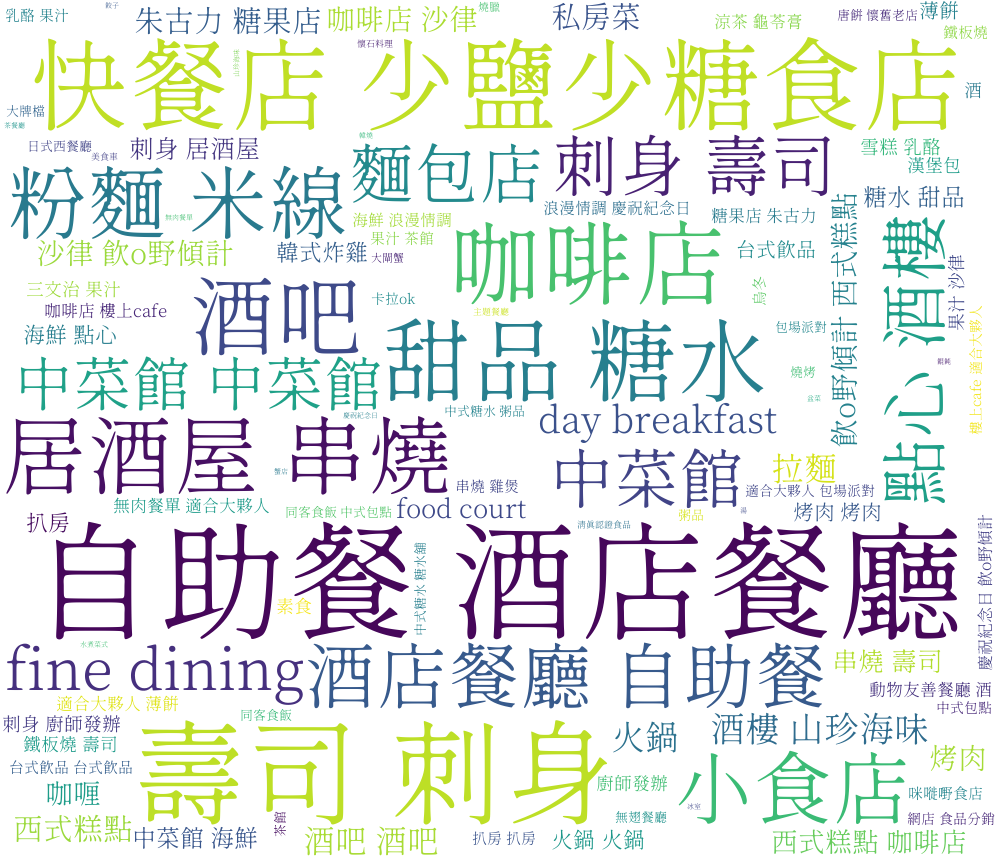

1. Restaurant category
Primary category
After data cleaning, I narrow down the primary category into 8 types. Among them, Western cuisine accounts for the highest proportion, followed by Hong Kong/Cantonese and Japanese cuisine, all with more than 300 restaurants, accounting for 29.9%, 21,3%, and 19.7% respectively, as shown in the pie chart below:
However, only 3 types of them got an average rating greater than or equal to 4.0, namely Japanese, multinational, and Central and South American cuisine. The highest rating of dislikes was for other Asian and other Chinese cuisines, and the lowest was for Middle Eastern/Mediterranean cuisine, but it didn’t get a high rating. Interestingly, the quantity of Central and South American cuisine is the lowest, but 7 of them got the most collections.
Secondary category
These restaurants also have some secondary categories as tags on Open Rice, which I have clustered and then made a word cloud to show more visually what types of dining are concentrated in Tsim Sha Tsui.
2. Restaurant address
The top 10 roads with the highest number of restaurants are as shown below, among them 廣東道 has the most restaurants but those in 漆咸道 got the highest rating.